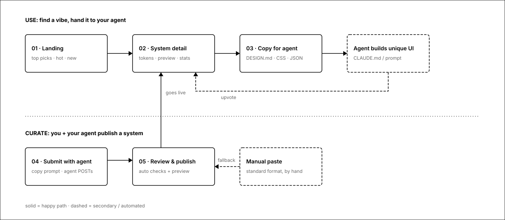
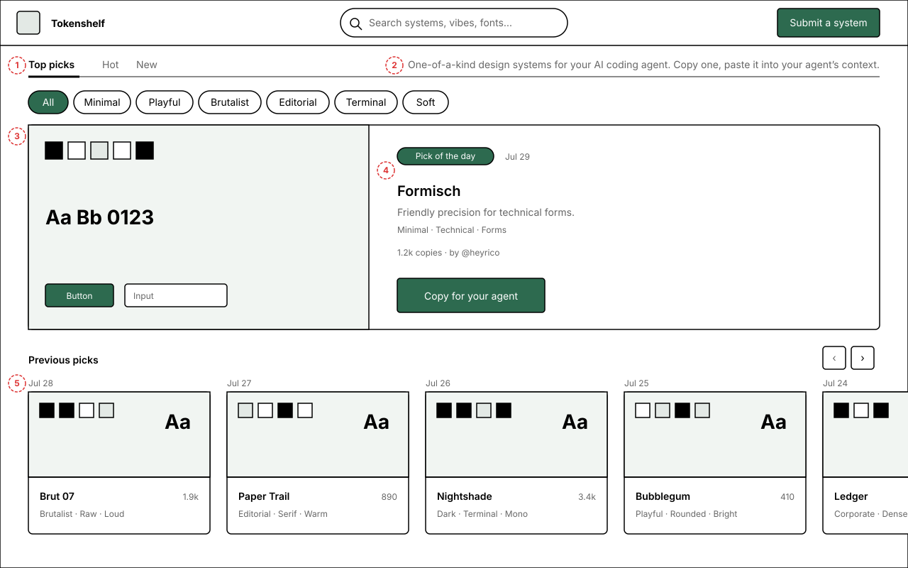
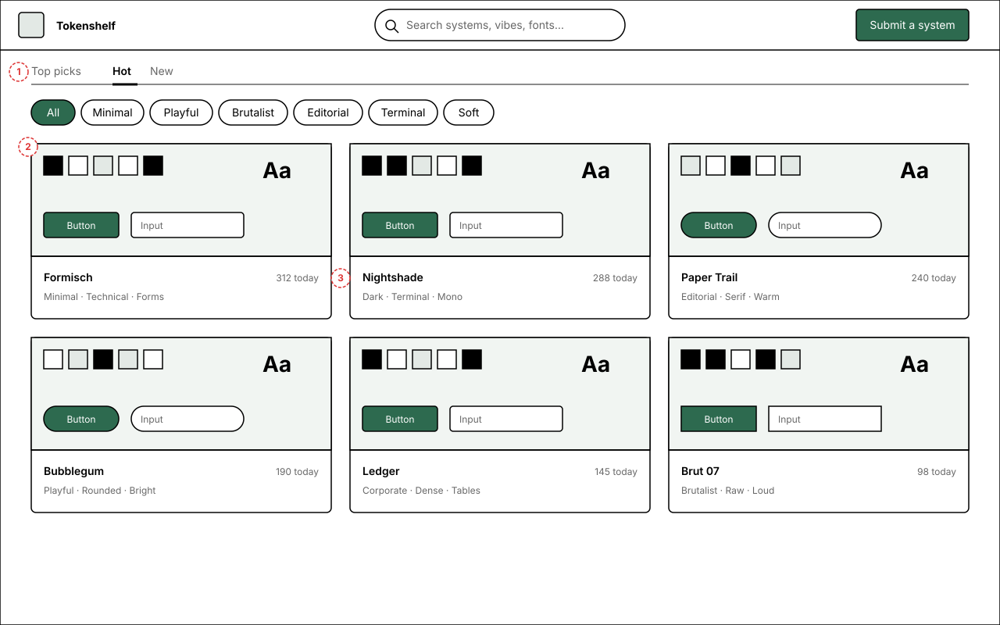
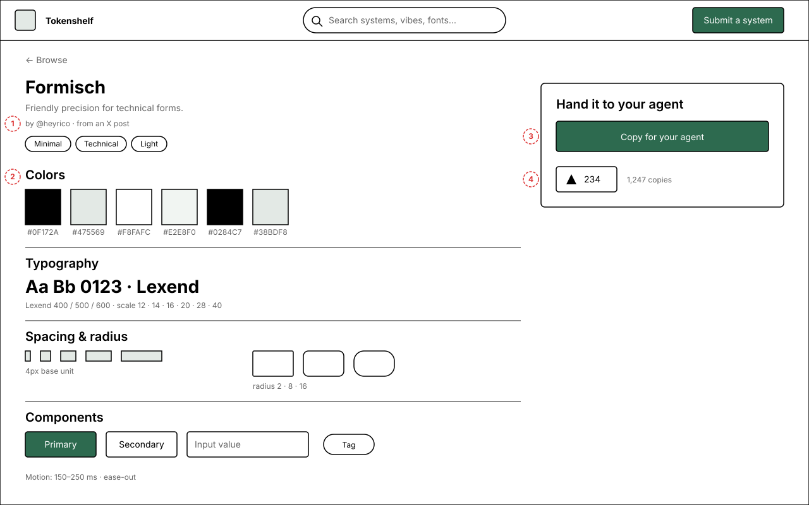
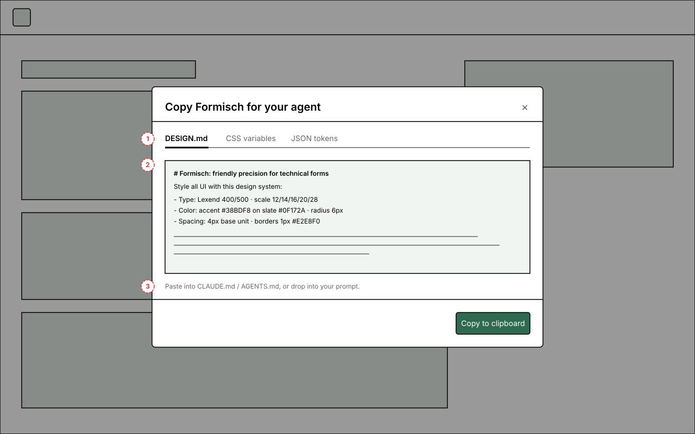
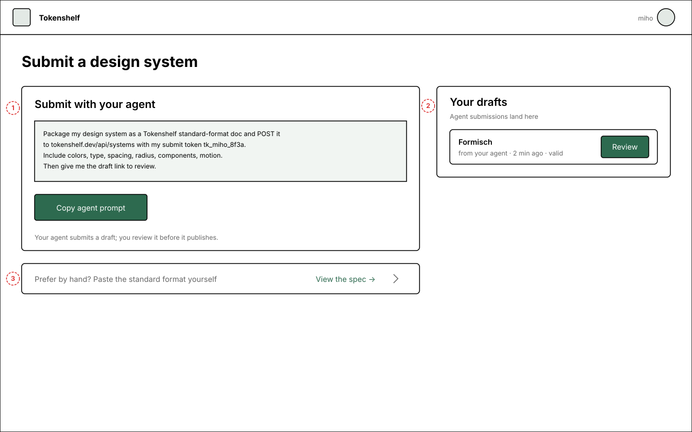
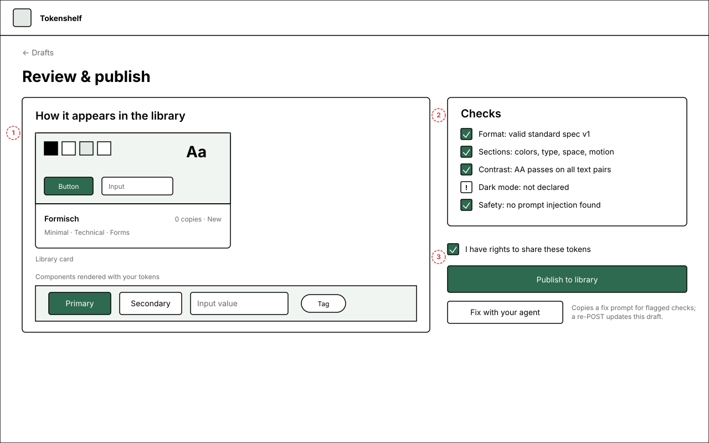

Tokenshelf: give your agent the sauce
Agent-built UIs default to the same recognizable slop. Tokenshelf is an agent-driven library with two sides: agents help you curate one-of-a-kind design systems, and agents use them to build unique UIs, so you avoid looking like everyone else. Daily upvotes decide what rises.
Two sides, one loop
Solid = happy path, dashed = fallback or automated. Your agent submits a draft, you publish it, other agents copy it, good copies come back as upvotes, and upvotes decide the daily pick.

Ingredients the product needs
The pieces the product needs. The Landscape below maps who already ships which.
Standard format
Every system uses the same sections: colors, typography, spacing & radius, components, motion. It's both the display shape and, in v1, the only accepted submission input, which makes browsing comparable and previews renderable.
Live previews, not screenshots
Cards and detail pages render a fixed component set (button, input, card, tag, toggle) from the submitted tokens.
Agent-ready export
The core action is "Copy for your agent": DESIGN.md prompt, CSS variables, or JSON tokens (more formats later). The prompt is the default because that's how the trend is actually used.
Quality signals
Daily upvotes decide the daily pick and rank Hot. Copy counts remain descriptive analytics, not a ranking input. No reviews to moderate; New gives fresh submissions a lane.
Vibe-based discovery
People search by feel, not token values: minimal, playful, brutalist, editorial, terminal. Tags + full-text search over names, fonts and descriptions.
Curate with your agent (no parsing in v1)
The primary path: copy a submission prompt, your agent packages your system in the standard format and POSTs a draft to the API; you review and publish. Manual paste is the fallback. The site validates, it never transforms.
Attribution & remixing
Systems credit a source (e.g. the original tweet), carry a license, and can be remixed; a fork keeps a link back.
Landscape: who's already here
DESIGN.md is an established open format: introduced via Google Stitch, spec by Google Labs (26.7k★, Apache 2.0, alpha) with a CLI that lints, diffs, and exports to Tailwind / W3C tokens. Below: who ships which of this proposal's core capabilities.
| Project | Open submit | Agent submit | Live preview | 1-click copy | Ranking | Daily pick | Originals | Checks |
|---|---|---|---|---|---|---|---|---|
| designmd.shGitHub-backed registry, npx | ~ | — | ~ | — | ~ | |||
| VoltAgentawesome-design-md 105k★ + getdesign.md | ~ | — | — | — | — | — | ||
| designmd.aicommunity library, likes + trending | ~ | — | — | ~ | — | |||
| designkit.shopen kit registry, npx, remixing | ~ | ~ | — | — | — | |||
| designmd.app · .coeditorial catalogs, 461 files | — | — | — | — | — | ~ | — | |
| 21st.devcomponents, not systems (YC W26) | ~ | — | — | |||||
| tweakcn · Shadcnblocksshadcn theme editors/galleries | — | — | — | — | ~ | — | ||
| Tokenshelfthis proposal |
1.Landing: Top picks
The landing is a curated list, not a dump: exactly one system wins each day. The latest winner gets a big hero card, and previous picks form a horizontal timeline of cards you scroll back through. Hot is the running race for today's slot; New is fresh submissions; vibe chips filter everything.

Annotations
- 1 · Three lists replace the sort question: Top picks · Hot · New. Chips still filter.
- 2 · One-line explainer, right-aligned on the tab row: the concept is novel, so first-time comprehension can't hang on a button label alone.
- 3 · The latest winner owns the hero: bigger preview, one-liner, creator credit.
- 4 · Copy CTA right on the winner: landing to agent in one click.
- 5 · Past winners as a dated card timeline; the clipped card signals scroll-back-in-time.
1b.Hot & New: card grid
The other two tabs are a plain card grid. Hot ranks today's race: whoever leads at midnight becomes the day's pick; New lists fresh submissions in order. One wireframe covers both; only the ordering differs.

Annotations
- 1 · Hot tab active; New is the identical grid ordered by recency.
- 2 · Same live-preview cards as everywhere else in the product.
- 3 · The stat is today's copies: the race metric that decides the pick at midnight.
2.System detail
Colors, typography, spacing & radius, components, motion, always in the same order. A sticky right rail holds the one action that matters.

Annotations
- 1 · Credit line: creator and original source.
- 2 · Standard sections, always in the same order.
- 3 · One CTA. Format choice happens inside the copy modal, not here.
- 4 · Upvote and copy count: the entire quality UI.
3.Copy for your agent
The money interaction: where your agent gets the sauce. A modal with one tab per export format, a preview of the exact payload, and a hint about where to paste it.

Annotations
- 1 · Three formats: DESIGN.md prompt (default), CSS variables, JSON. Tailwind and CLI deferred.
- 2 · Payload preview shows exactly what lands on the clipboard.
- 3 · One line of guidance, one copy button. Download deferred.
4.Submit with your agent
The primary path: copy the submission prompt, point your agent at whatever you have (CSS, a repo, screenshots), and it packages the system in the standard format and POSTs a draft. Manual paste still exists, collapsed at the bottom. Publishing always goes through your review.

Annotations
- 1 · The prompt card is the whole submit UI: copy it, your agent does the rest. The prompt embeds your personal submit token (signed-in avatar in the nav), which is how the draft lands in your account.
- 2 · Drafts land here for review; agents can't publish alone.
- 3 · Manual paste survives as a collapsed fallback, with a spec link so the by-hand path is completable.
5.Review & publish
You see exactly how the draft will appear (card and components) plus the validation results. Publish is instant; quality is sorted by the community afterwards, not gatekept upfront.

Annotations
- 1 · The render you're approving: library card plus components, straight from the submitted tokens.
- 2 · Five checks: valid format, sections present, contrast AA, dark-mode warning, prompt-injection scan. Warnings inform, don't block.
- 3 · Publish, or "Fix with your agent": copies a fix prompt referencing the flagged checks; a re-POST updates the draft in place. No dead end on the non-happy path.
Open questions
- Ranking: Hot uses the current day's upvotes, with publication time and stable ID as deterministic tiebreakers.
- Spec design: Research says adopt Google's DESIGN.md spec (it ships a linter, diff, and Tailwind/DTCG export) instead of inventing a format. Open: it's alpha; how do we handle spec churn, and do we pin a version per submission?
- Rights: Many systems will be distilled from other people's tweets or products. Is a source link + license field enough, or is there a takedown story? Precedent: getdesign.md frames brand entries as "independent analysis of publicly observable design patterns" with non-affiliation disclaimers.
- Remixing: Fork-with-backlink (GitHub model) or keep v1 flat and add it later?
- Minimum bar: Require dark mode / full token coverage to publish, or badge the gaps (as wireframed)?
- Daily pick: Chosen purely by the prior day's upvotes. On a day with no votes, no winner is selected.
- Agent auth: wireframed as a personal submit token embedded in the copied prompt (requires sign-in). Alternative still open: anonymous drafts claimed via link, for zero-friction first submissions.
- Accounts: Browsing and copying anonymous; voting and submitting need sign-in. Does the copy counter count anonymous copies?